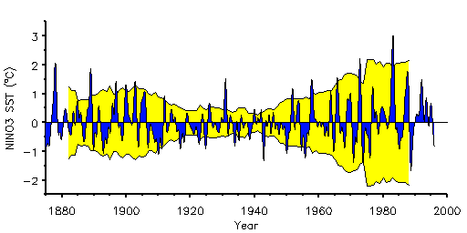

Wavelet Analysis
Introduction
Many time series in geophysics exhibit non-stationarity in their
statistics. While the series may contain dominant periodic signals,
these signals can vary in both amplitude and frequency over long
periods of time.
An example would be sea surface temperatures in the
equatorial Pacific Ocean (Figure 1).
The dominant "mode" of variability is the
El Niño-Southern Oscillation (ENSO), shown by the high-frequency
"spikes" on a time scale of 2-7 years.
Superimposed on this signal are much longer interdecadal fluctuations.
The interdecadal fluctuations have the effect of modulating the
amplitude and frequency of occurance of El Niño events.

-
Fig. 1.
- Sea surface temperatures averaged over the NINO3 region
in the eastern Pacific (5°S-5°N, 90°W-150°W).
Blue curve is low-pass filtered (>12 months) SST.
Yellow background curve is running 15-year variance, plotted
at mid-point of 15-year period. Curve has been reproduced upside-down
to show "envelope" of variance.
Ideally, one would like to separate the shorter period
oscillations from the longer.
[Note: the word "oscillation" is used here to indicate
any repeating fluctuation in the timeseries, regardless of whether
the fluctuation repeats on a regular basis or not. In our example the
El Niño is definitely an aperiodic (irregular) signal.]
The simplest method for analyzing non-stationarity
of a timeseries would be to compute statistics such as the
mean and variance
for different time periods and see if they are significantly different.
In Figure 1 we have also plotted the running 15-year variance, as
a measure of total power inherent in the signal versus time.
One can see that ENSO had more variance during 1880-1920
and also since 1950,
with a relatively quiet period during 1920-1950.
While the running variance tells
us what the overall strength of the
signal was at certain times, it suffers from two major defects:
- [Time Localization]
The shape of the curve is highly dependent on the length of
the window used. Fifteen years was chosen above as a compromise between
either too-much smoothness (say using a 30-year window),
or too-little (a 5-year window). An ideal method would allow different
window sizes depending on the scales that one is interested in.
- [Frequency Localization]
The running variance contains no information on the frequency
of a periodic signal,
only its amplitude (and that only if the window is chosen widely).
One possibility would be to do a windowed (or
running) Fourier transform (WFT), using a certain window size and
sliding it along in time, computing the FFT at each time using only
the data within the window. This would solve the second problem
(frequency localization), but would still be dependent on the window
size used. The main problem with the WFT is the inconsistent treatment
of different frequencies: at low frequencies there so few oscillations
within the window that the frequency localization is lost, while at
high frequencies there are so many oscillations that the time
localization is lost. Finally, the WFT relies on the assumption that
the signal can be decomposed into sinusoidal components.
Wavelet analysis attempts to solve these problems by
decomposing a timeseries into time/frequency space simultaneously.
One gets information on both the amplitude of any "periodic" signals
within the series, and how this amplitude varies with time.
back to Wavelet Home Page